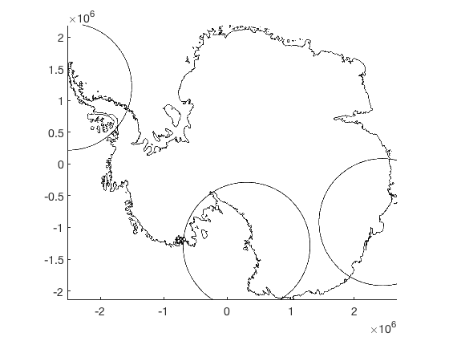

circleps documentation
circleps is part of Antarctic Mapping Tools for Matlab (Greene et al., 2017). Click here for a complete list of functions in AMT.
The circleps function plots circles of given radii on an Antarctic polar stereographic projection map. Latitude of true scale is 71S.
Contents
Syntax
circleps(lat,lon,radius_km) circleps(x,y,radius_km) circleps(...,'PropertyName',PropertyValue) circleps(...,'km') circleps(...,'meridian',meridian) h = circleps(...)
Description
circleps(lat,lon,radius_km) plots circle(s) of specified radius in kilometers centered at points given by geo coordinates lat and lon.
circleps(x,y,radius_km) lets you input coordinates as polar stereographic meters. Coordinates are automatically determined by the islatlon function.
circleps(...,'PropertyName',PropertyValue) specifies patch or fill properties such as 'facecolor' or 'linewidth'.
circleps(...,'km') plots in polar stereographic kilometers rather than meters.
circleps(...,'meridian',meridian) specifies a meridian longitude in the polar stereographic coordinate conversion. Default meridian is 0.
h = circleps(...) returns the handle(s) h of the plotted circle(s).
Example 1: Simple circles
Given these three places:
places = {'mcmurdo station','palmer station','casey station'};
[lat,lon] = scarloc(places);
Start with a Mouginot's grounding line for context, then plot circles of 1000 km radius centered on each station:
antbounds('gl','k') circleps(lat,lon,1000)
Example 2: Fancy formatted circles:
Adding to the circles from Example 1, plot blue filled circles with thick red outlines--and make them have a 500 km radius for McMurdo, 400 km radius for Palmer, and 300 km for Casey:
circleps(lat,lon,[500;400;300],'facecolor','b','edgecolor','r','linewidth',4) axis tight
Example 3: Plot in kilometers:
Sometimes it's convenient to plot in kilometers rather than meters. Here we repeat Example 1, but in kilometers:
figure antbounds('gl','km') circleps(lat,lon,1000,'km') axis tight
Citing AMT
If this function or any other part of Antarctic Mapping Tools is useful for you, please cite the paper that describes AMT.
Greene, C. A., Gwyther, D. E., & Blankenship, D. D. Antarctic Mapping Tools for Matlab. Computers & Geosciences. 104 (2017) pp.151-157. doi:10.1016/j.cageo.2016.08.003.
Author Info
This function was written by Chad A. Greene of the University of Texas at Austin's Institute for Geophysics (UTIG). October 2016.